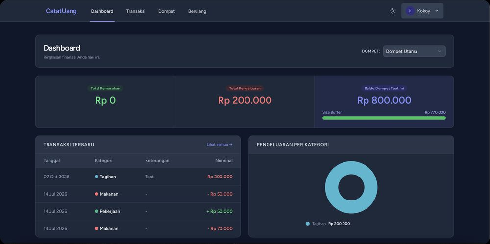
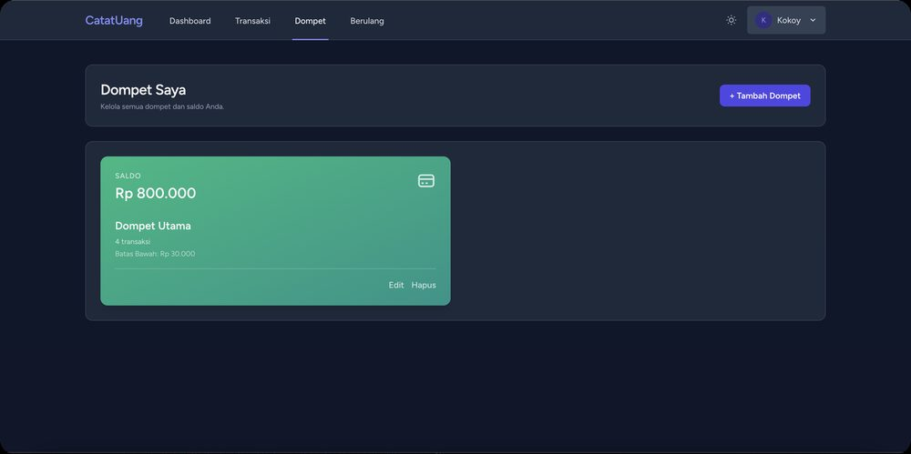
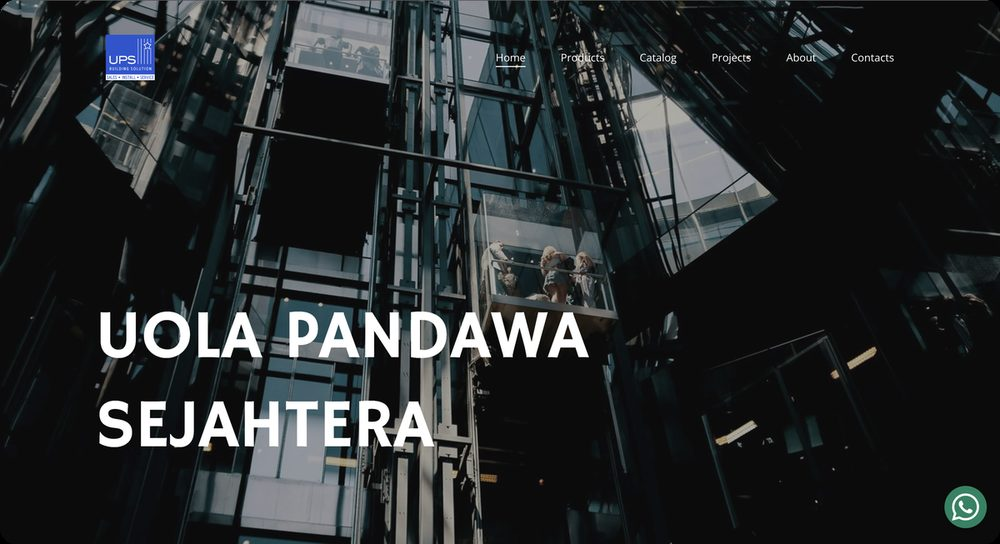
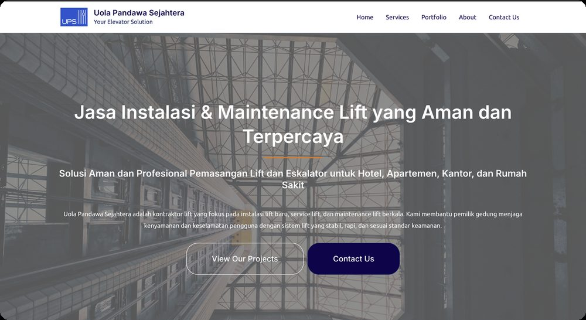
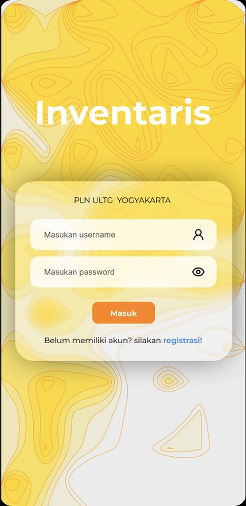
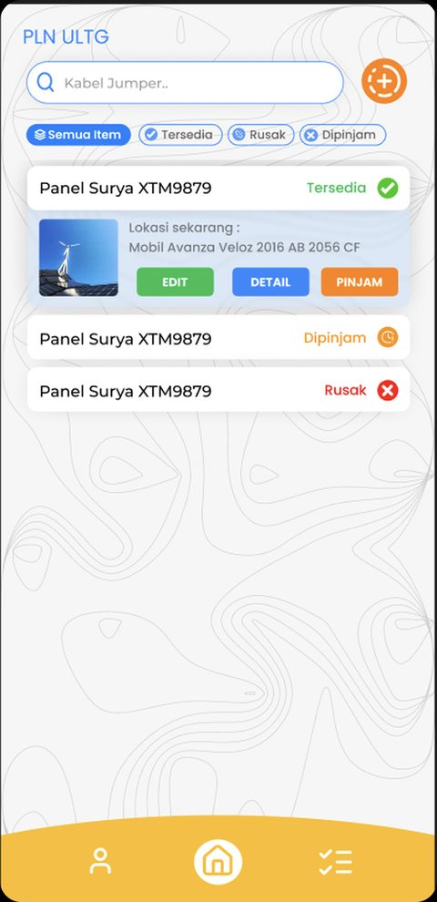
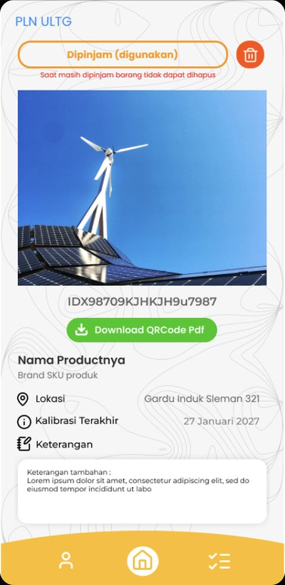

Agentic development · 2025
CatatUang
Multi-wallet personal finance PWA, built entirely with AI agents.
Started as a server-rendered Laravel app, converted to a Vue 3 SPA with a Sanctum API in five phases, then turned into a deploy-ready PWA. Features include recurring transactions via the scheduler and graduated push alerts (20%, 10%, 0%) through a queue. Backed by PHPUnit tests, wallet isolation checks, and Docker deploys on Railway and Render.
- 85 commits
- 30+ API endpoints
- 9 features
Laravel 13 · Vue 3 · Pinia · Tailwind · PostgreSQL · Docker
Role: product owner and AI agent director
View on GitHub →
Bangkit Academy 2023
KoMa (Konco Mangan)
Android app that recognizes ingredients from photos and recommends healthy recipes.
Capstone C23-PS252 with a six-person Android, ML and Cloud team. I owned the backend and deployment: a Node.js and Express API on Cloud Run, Sequelize migrations and recipe seeding, OTP password reset, and a Cloud Build CI/CD pipeline (install, build image, push, deploy).
- 97% validation accuracy
- 36 ingredient classes
- 13 endpoints
Node.js · Express · Sequelize · Cloud Run · Cloud SQL · Cloud Storage
Role: Cloud Engineer (backend and deployment)
View on GitHub →


Web design
Uola Pandawa Sejahtera
Main and marketing websites for a lift contractor, built with WordPress.
Designed the layout and structure for two public websites: hero with dual calls to action, full navigation, product catalog, projects, and a floating WhatsApp button. Conveys a safe, professional impression with a consistent blue and navy identity, and was deployed on the main domain and a marketing subdomain.
WordPress · Web design · Domain deployment
Role: web designer
Visit main site →
Mini project
Mini App Pokemon
Pokemon card catalog and shop built with Angular, from login to checkout.
A practice project for clean Angular architecture: lazy-loaded modules, NgRx cart state restored from sessionStorage, dual route guards (auth and unsaved-form), reactive forms with a FormArray, Firebase Auth and order CRUD in Realtime DB. SSR-ready with Express.
- 160 Pokemon
- 17 type filters
- 19 Angular
Angular 19 · TypeScript · NgRx · Tailwind · Firebase · PokeAPI
Role: developer
View on GitHub →



Case study
ULTG Inventory
Mobile inventory management app for PLN ULTG Yogyakarta.
Field equipment like solar panels and jumper cables constantly moves and gets borrowed. The app gives every item a unique code and QR, a clear status (Available, Borrowed, Damaged), and location and calibration history. Borrowed items are protected from deletion; QR codes download as PDF and are scanned in-app.
Flutter · Express.js · QR codes
Role: project lead and developer